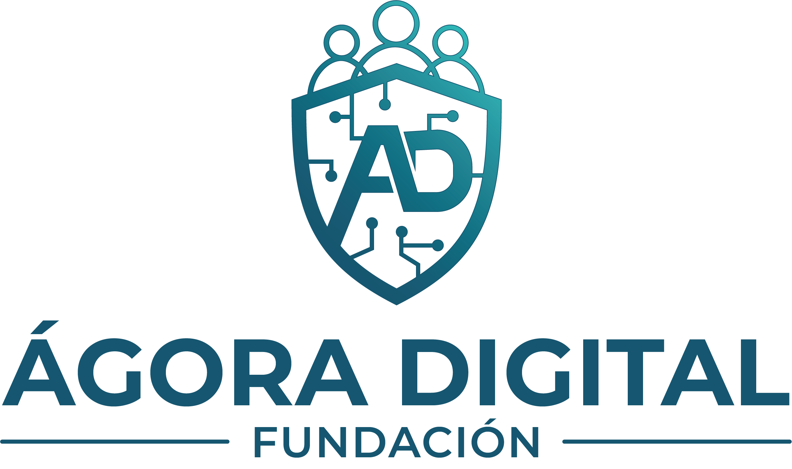
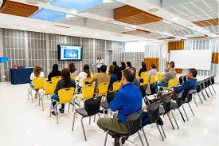

Educamos
Formamos a niñas, niños, adolescentes, familias y docentes con conocimiento práctico para reconocer los riesgos digitales antes de que ocurran.
Fundación colombiana · Seguridad digital
Educamos, capacitamos y acompañamos a familias, docentes y niñas, niños y adolescentes para navegar el mundo digital de forma segura, previniendo el ciberbullying y otros delitos en línea.

Nuestro lema
Todo lo que hacemos en Ágora Digital está guiado por estos tres compromisos fundamentales.
Formamos a niñas, niños, adolescentes, familias y docentes con conocimiento práctico para reconocer los riesgos digitales antes de que ocurran.
Acompañamos a las comunidades educativas con herramientas, protocolos y redes de apoyo para actuar frente al ciberbullying y otros delitos.
Nos actualizamos constantemente porque el entorno digital cambia todos los días. Nuestra formación evoluciona con las amenazas y las tecnologías.
Nosotros
Ágora Digital es una fundación colombiana dedicada a la educación y protección en seguridad digital para la infancia y adolescencia.
Contribuir a la protección integral de niñas, niños y adolescentes en el entorno digital, mediante programas de educación, sensibilización y capacitación dirigidos a NNA, familias, docentes y cuidadores, promoviendo el uso responsable, seguro y ético de las tecnologías de la información.
Ser en 2030 la fundación referente en Colombia en seguridad digital para la infancia y adolescencia, reconocida por su impacto transformador en comunidades, instituciones educativas y políticas públicas de protección digital.
Qué hacemos
Intervenciones diseñadas para cada actor de la comunidad educativa, con enfoque preventivo y formativo.
Lo que ofrecemosIdentificamos, prevenimos y acompañamos casos de acoso digital en entornos escolares y familiares, con protocolos claros de actuación.
Formamos a NNA y adultos sobre privacidad, identidad digital, huella digital y el manejo responsable de sus perfiles y datos personales.
Capacitamos para reconocer y prevenir situaciones de riesgo en entornos digitales, con énfasis en la protección de la intimidad de los menores.
Abordamos el uso excesivo de pantallas, la salud mental digital y el equilibrio entre vida real y virtual para una tecnología más sana.
Equipamos al personal educativo con herramientas para detectar señales de alerta, actuar oportunamente y acompañar a sus estudiantes.

Guiamos a las familias en control parental, comunicación sobre riesgos digitales y estrategias para acompañar a sus hijos en el mundo en línea.
Capacitaciones
Diseñados para impactar a todos los actores de la comunidad educativa.
Programa interactivo para niñas, niños y adolescentes sobre seguridad digital, ciberbullying y uso responsable de redes sociales.
Taller práctico para padres y madres: control parental, señales de alerta del ciberbullying y cómo hablar de riesgos digitales en casa.
Formación para docentes y personal educativo: detección de situaciones de riesgo digital, protocolos de actuación y acompañamiento.
Recursos gratuitos
Guías, cartillas e infografías para que familias e instituciones tengan herramientas siempre a la mano.
Cómo hablar con tus hijos sobre seguridad digital.
Solicitar recursoCuéntame: guía sobre ciberbullying para niños.
Solicitar recursoSeñales de alerta del ciberbullying para compartir.
Solicitar recursoICBF, Policía Nacional y Te Protejo.
Solicitar recursoLlevamos nuestros talleres a colegios, fundaciones y organizaciones en todo Colombia, de forma presencial o virtual.
Contacto
Escríbenos para solicitar un taller, una alianza o simplemente para conocer más sobre la fundación.